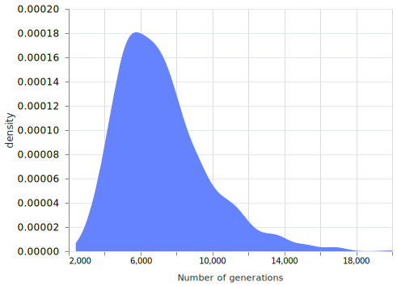
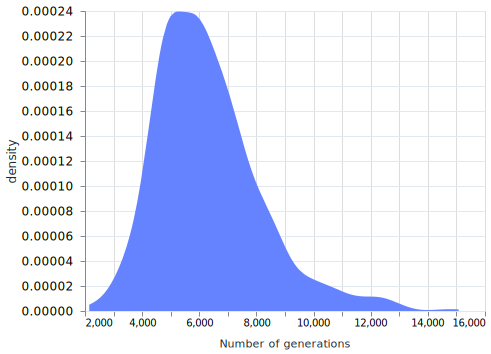

Genetic Algorithms (GA) are algorithms inspired by the evolutionary process found in nature. Sometimes these are called Stochastic Algorithms as they make use of randomness to find an optimal solution, but with features such a "natural selection" to remove less suitable solutions while generating new possible ones.
Genetic Algorithms are found in route optimzation problems, in engineering (e.g. evolved antennas), in epidemic mitigation, and much more.
In this article we will solve a simple problem: "what is the target phrase?". This is not a real-world problem, but suitable enough to showcase each component of a Genetic Algorithm; like a "Hello World" of Genetic Algorithms. With the foundation provided by this, I hope this can give you a better understanding of GAs, and an appreciation for using Elixir with them.
Anatomy of a Genetic Algorithm
A genetic algorithm will try to promote the possible soultions (chromosomes) with the best "fitness" and combine them into a new possible solution, which will inherit features of both. While it does this, it may introduce some mutations (small changes that were not part of its "parents" chromosomes).
In essence, these are the genetic algorithm's components:
- Chromosomes
possible solutions - Initial population
random chromosomes - Fitness evaluation
- Selection
better fitness score are more likely to be chosen as "parents" - Crossover
"mating" of parents to produce an "offspring", a new chromosome - Mutation
small random changes in a chromosome - Evolution Loop
repeating the steps of selection -> crossover -> mutation to arrive at a chromosome that is the best fit for the problem at the hand
We will add an "elitism" component to this which will make sure that the best possible solutions are never discarded. This is a component that may act dynamic depending on where we are in the evolution loop. But initially we will keep it static.
For anyone who has set up a Livebook application and want to experiment, just grab the source from my gist (copy) and click Open/From source. If you haven't set up a Livebook application, read about how to do that in my article Interactive documents with Livebook. You can set it up on free hosting via Hugging Face.
The target phrase
Our goal is via random chromosomes start selecting the best fit ones to crossover with each other. They will be selected based on how well they fit with the target phrase. It will be a phrase based on characters from 'a' to 'z', with space included. Let's define this:
defmodule GeneticString do
# We define the target phrase here but it might as well be passed in via the evolve function.
@target_phrase "The solution is yet to emerge"
# Defines which characters can be present in the target phrase
defp possible_characters() do
Enum.to_list(?a..?z) ++
Enum.to_list(?A..?Z) ++
[?_, ?\s]
end
end
The first chromosome
The first step towards arriving at a solution is a function to generate a random chromosome. It will produce a chromosome of length length by random characters present in possible_characters. This function will be used to generate the initial population.
defmodule GeneticString do
# ...
# Generate a random chromosome (potential solution)
defp random_chromosome() do
Enum.map(
1..String.length(@target_phrase), # We will help the GA along the way by letting it set correct length
fn _ -> possible_characters() |> Enum.random() end
)
|> List.to_string()
end
end
Evaluating fitness
The fitness evaluation is an important part in the genetic algorithm. It will tell the algorithm when it is moving closer towards a solution. In our case, we will do a fairly simple evalutaion. The fitness score will represent how many characters are correctly placed in the chromosome when compared to target_phrase. A more evolved fitness evaluation might take into account its length as well as maybe its Levenshtein distance, and so on.
We will see that our fitness evaluation will also take a map, a "memo" of already evaluated chromosomes. This way an already evaluated chromosome will not have to be calculated again. This would be a trade-off between memory/retrieval and calculation cycles.
defmodule GeneticString do
# ...
# Calculate fitness based on if a character is placed in the correct n:th place.
defp fitness_calc(chromosome) do
chromosome
|> String.graphemes()
|> Enum.zip(String.graphemes(@target_phrase))
|> Enum.count(fn {char1, char2} -> char1 == char2 end)
end
# Either retrieve fitness score for a chromosome or calculate it and place it in the map
defp fitness(chromosome, memo \\ %{}) do
case Map.get(memo, chromosome) do
nil ->
fitness = fitness_calc(chromosome)
updated_memo = Map.put(memo, chromosome, fitness)
{fitness, updated_memo}
fitness ->
{fitness, memo}
end
end
# Updates the fitness map for all chromosomes
defp memoize_fitness([], memo), do: memo
defp memoize_fitness([chromosome | tail], memo) do
{_, new_memo} = fitness(chromosome, memo)
memoize_fitness(tail, new_memo)
end
end
Parents, offsprings and mutations
We have now defined fitness and chromosomes. Let's go to the next part, which is selecting parents to produce offsprings via the components crossover and mutation. The idea is to get at least one parent from the ones with the best fitness score, and the other parent from the broader population. Once selected, these will be passed to the crossover function to produce the offspring, and a mutation function that will introduce a bit of variation. Currently we will only make a mutation in one randomly chosen spot.
defmodule GeneticString do
# ...
# Randomly select two "parents" from the provided list of chromosomes
defp select_parents([]), do: []
defp select_parents(possible_parents) do
possible_parents
|> Enum.shuffle()
|> Enum.take(2)
end
# Combine first part of one chromosome to the second part of another.
# The resulting chromosome will have features from both "parents"
defp crossover(chromosome1, chromosome2) do
crossover_point = Enum.random(1..(String.length(chromosome1) - 1))
String.slice(chromosome1, 0, crossover_point) <>
String.slice(chromosome2, crossover_point, String.length(chromosome2) - crossover_point)
end
# Introduce a random mutation to a chromsome.
# The spot where the mutation will happen is randomly chosen, as is the possible character introduced.
defp mutation(chromosome) do
mutation_point = Enum.random(0..(String.length(chromosome) - 1))
String.slice(chromosome, 0, mutation_point) <>
List.to_string([possible_characters() |> Enum.random()]) <>
String.slice(
chromosome,
mutation_point + 1,
String.length(chromosome) - (mutation_point + 1)
)
end
Evolution - the iterative process to produce best fit chromosome
We will be using a evolve mechanism where we will initialize a starter population with a radom chromosomes and set an elitism rate. These initial values will be passed into a recursive evolve mechanism (our evolution loop). Once we've either gotten a perfect fitness score, or we have hit the generation limit, we will return the best suited chromosome.
(While we are at it we will also bundle in which iteration - n:th generation - we were at when the chromosome was produced.)
defmodule GeneticString do
# ...
# Recursive function that will continue evolving the chromosomes until a perfect fitness score is reached,
# or the generation limit has been reached.
defp evolve_mechanism(generation, %{population: [best_match | _]}, _elitism, _fitness_memo)
when generation.limit == generation.i,
do: %{chromosome: best_match, generation: generation.i}
defp evolve_mechanism(generation, population_data, elitism, fitness_memo) do
memoized_fitness = memoize_fitness(population_data.population, fitness_memo)
# Sort population based on fitness
sorted_population =
population_data.population
|> Enum.sort_by(fn chromosome -> Map.get(memoized_fitness, chromosome) end, :desc)
# Select number of population that will have a higher chance to survive, and produce offspring
elite_population =
sorted_population
|> Enum.take(elitism.count)
rest_population = Enum.drop(sorted_population, elitism.count) |> Enum.shuffle()
possible_parents = case length(elite_population) do
x when x < 2 -> elite_population ++ Enum.take(sorted_population, 2)
_ -> elite_population
end
[parent1, parent2] = select_parents(possible_parents)
# Produce offspring by combining parents and introduce a mutation
offspring = crossover(parent1, parent2) |> mutation()
# Keep an elite-num of chromosome, and drop less fortunate chromomse before appending the offspring
new_population =
(elite_population ++ rest_population)
|> Enum.drop(-1)
|> Kernel.++([offspring])
[elite | _] = new_population
fitness_score = Map.get(memoized_fitness, elite)
max_score = String.length(@target_phrase)
# If perfect fitness score, then return the elite chromosome.
case fitness_score do
x when x == max_score ->
%{chromosome: elite, generation: generation.i}
_ ->
evolve_mechanism(
%{i: generation.i + 1, limit: generation.limit},
%{population: new_population, size: population_data.size},
elitism, # Might be switched for adaptive elitism
memoized_fitness
)
end
end
end
The evolve_mechanism function is recursive in that it will call itself as long as we either haven't gotten a perfect fitness or we have hit a generation limit.
Now it's finally time to define our entry-point to this genetic algorithm. evolve will set up some initial values and start the evolve-mechanism:
defmodule GeneticString do
# ...
# Our ENTRY POINT to the evolution
def evolve(population_size, generation_limit \\ 100) do
population = Enum.map(1..population_size, fn _ -> random_chromosome() end)
elitism_rate = 0.01
evolve_mechanism(
%{i: 0, limit: generation_limit}, # generation data
%{population: population, size: population_size}, # population data
%{rate: elitism_rate, count: floor(elitism_rate * population_size)}, # elitism data (suitable for adding an adaptive mechanism)
%{} # fitness map
)
end
end
We can call our Genetic Algorithm with the following command: GeneticString.evolve(50, 20000). This will set the initial population to 50 and sets the generation limit to 20000. The result will be a map like this: %{generation: 6367, chromosome: "The solution is yet to emerge"}
Our Genetic Algorithm has multiple points where we can experiment with its different parameters. Instead of a static elitism_rate we can involve a more dynamic or adaptive format. We can also experiment with number of offsprings and parents as well. There are a lot of ways to tweak just this simple Genetic Algorithm, but for now, let's explore how it would be like to have elitism that is adjusted according to how far along the generations has come towards the generational limit.
First we will add a new function that will update the elitism:
defmodule GeneticString do
# ...
defp adjust_elitism(elitism, generation, population_size) do
progress = generation.i / generation.limit
rate = case progress do
# Less of population considered for elite (aka, in this case, available for reproduction)
x when x < 0.2 ->
max(elitism.rate - 0.05, 0.01)
# In later generations, a larger proportion of population will be included in elite population
_ ->
min(elitism.rate + 0.01, 0.25)
end
%{rate: rate, count: floor(rate * population_size)}
end
end
Then we will update our evolution_mechanism so that in its recursive call will be updating the elitism:
defmodule GeneticString do
# ...
defp evolve_mechanism(generation, population_data, elitism, fitness_memo) do
# ...
case fitness_score do
x when x == max_score ->
%{chromosome: elite, generation: generation.i}
_ ->
evolve_mechanism(
%{i: generation.i + 1, limit: generation.limit},
%{population: new_population, size: population_data.size},
adjust_elitism(elitism, generation, population_data.size), # We change this row to update elitism
memoized_fitness
)
end
end
end
I test ran our genetic algorithm first with a static elitism, then with an adjusted elitism. Each was run 1000-times. I plotted their density curves and gathered their core descriptive statistics. Let's see the result:
n:th generation (static elitism)

| min | max | mean | median | stdev |
|---|---|---|---|---|
| 2391 | 20000 | 7170 | 6763 | 2497 |
n:th generation (adjustable elitism)

| min | max | mean | median | stdev |
|---|---|---|---|---|
| 2149 | 15078 | 6297 | 5991 | 1847 |
With this adjustable elitism, we got a more narrow distribution and a lower median. We can argue that the inclusion of the adjustable elitism improved our algorithm. But still, there are so many ways we can tinker with it. The elitism can have multiple ways it can be adjusted; different cut-offs, rate changes, minimum and maximum rates, and so on. But there are also many other adjustments we can make. How many parents we will allow getting offsprings, and how many? Perhaps the fitness-evaluation is too simple and need more nuance? Should the crossover be more of a diffusion where one parent's feature is scattered in the chromosome?
The Genetic Algorithm is versatile! We have seen its core components and got to tinker with them. We have explored one way to make it more dynamic and what impact that may have. Even a simple GA as we have built here can be adjusted in many different ways. I therefor welcome you to do so. I have created a GitHub Gist with a Livebook document that you may use in your own Livebook session: genetic-algorithm.livemd